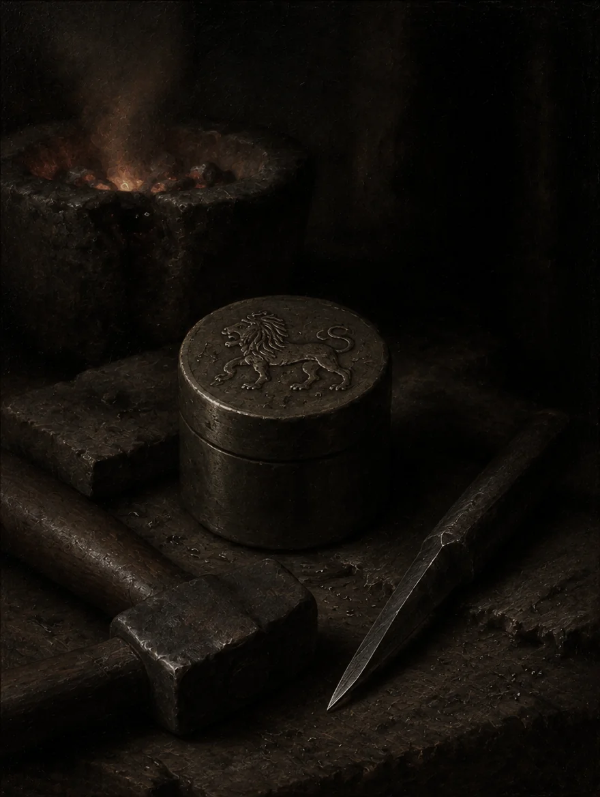
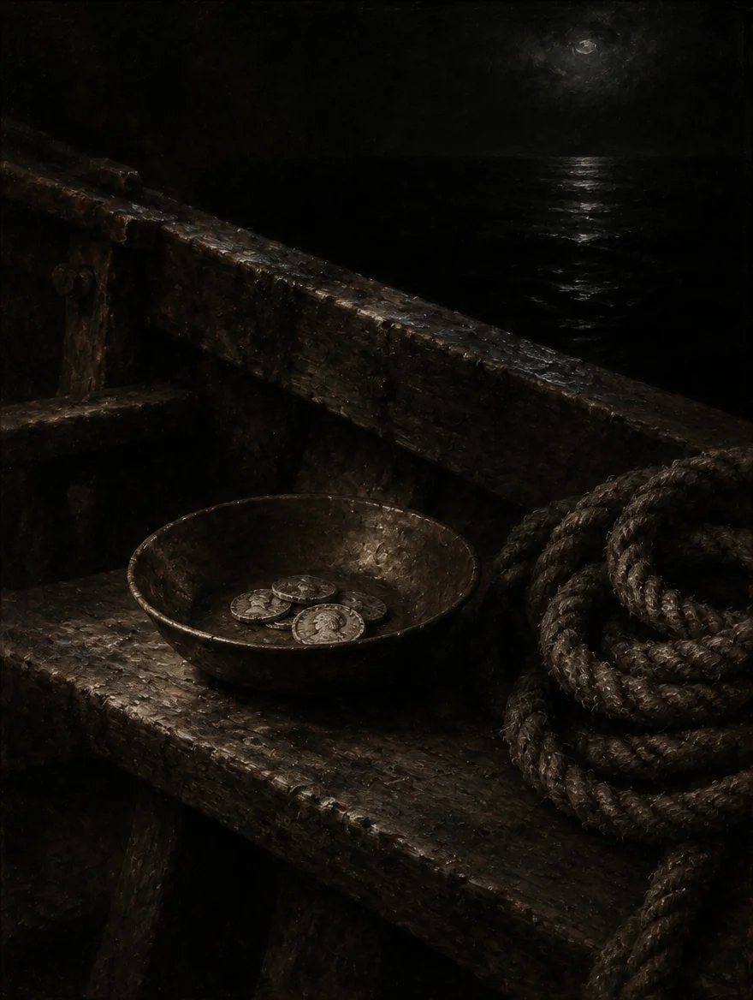
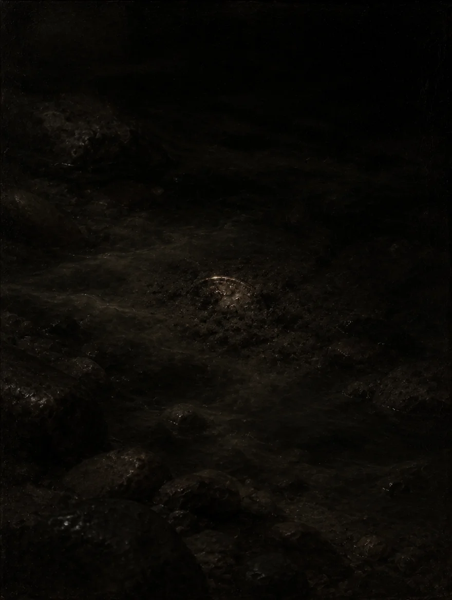

The only cut
the lion allowed
No blade had ever marked the lion. An apprentice's burin did — and the strike landed a little off centre.
Alexandros of Miletus
This coin was struck by hand in the workshop of Alexandros of Miletus, somewhere in the fourth century before our era, from a blank of copper that had already lived one life as a temple nail. The lion on its face was cut into the die by an apprentice whose name nobody wrote down, and the strike landed a little off centre, as they often did. It passed through the purse of Theron the ferryman, paid for a night's lodging in Halikarnassos, and was lost in the mud of a riverbank for eleven hundred years. A farmer's daughter, Eleni Vassilaki, found it in the spring of 1911 and kept it in a matchbox under her pillow. The high points wore smooth against her thumb. Every scratch on it is a hand it has known, and every hand is a story that nobody finished telling.

No blade had ever marked the lion. An apprentice's burin did — and the strike landed a little off centre.
Alexandros of Miletus

The ferryman weighs every obol in the dark. A light coin does not cross — it goes back to the shore of the living.
Charon

Eleven hundred years under the silt. The river forgets everything; copper keeps every scratch.
Lethe
A farmer's daughter, a matchbox under a pillow, the high points wearing smooth against a thumb.
Eleni Vassilaki